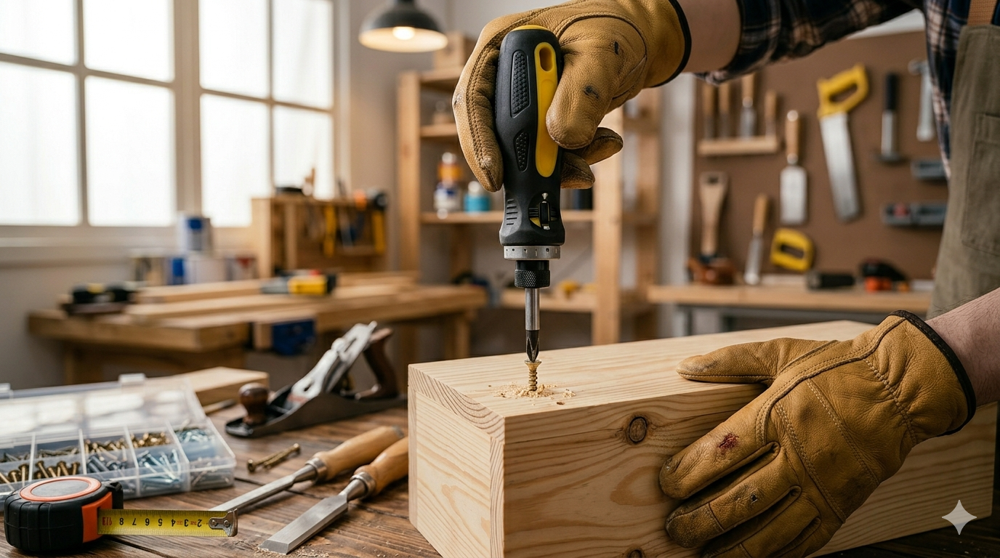

การเลือกใช้เครื่องมือให้เหมาะกับงาน ช่วยให้งานมีคุณภาพ ลดความเสียหาย และเพิ่มความปลอดภัยในการปฏิบัติงาน
การเตรียมงานอย่างเป็นขั้นตอน ช่วยลดการหยิบเครื่องมือผิด ลดการแก้งาน และเพิ่มความปลอดภัยในการทำงาน
เช็กระยะ จุดติดตั้ง และขนาดงานก่อน เพื่อไม่ให้ตัด เจาะ หรือประกอบผิดตำแหน่ง
เลือกเครื่องมือและอุปกรณ์ให้ตรงงาน เตรียมของให้ครบก่อนเริ่ม
ขีดตำแหน่ง จัดวางอุปกรณ์ และมองภาพรวมก่อนลงมือจริง
ทำงานได้เร็วขึ้น ลดการแก้ไข และควบคุมความปลอดภัยได้ดีขึ้น

การใช้เครื่องมืออย่างถูกวิธี ไม่เพียงช่วยให้งานมีคุณภาพ แต่ยังช่วยลดความเสียหายต่ออุปกรณ์ และเพิ่มความปลอดภัยในการทำงาน
เครื่องมือแต่ละชนิดมีหน้าที่เฉพาะ ควรเลือกใช้ให้ตรงกับประเภทงานทุกครั้ง
ไม่ใช้เครื่องมือแทนกัน เพราะอาจทำให้อุปกรณ์เสียหาย และเกิดอันตรายระหว่างทำงาน
ทำความสะอาด ตรวจสภาพ และเก็บรักษาอย่างเหมาะสม เพื่อให้เครื่องมือพร้อมใช้งานเสมอ